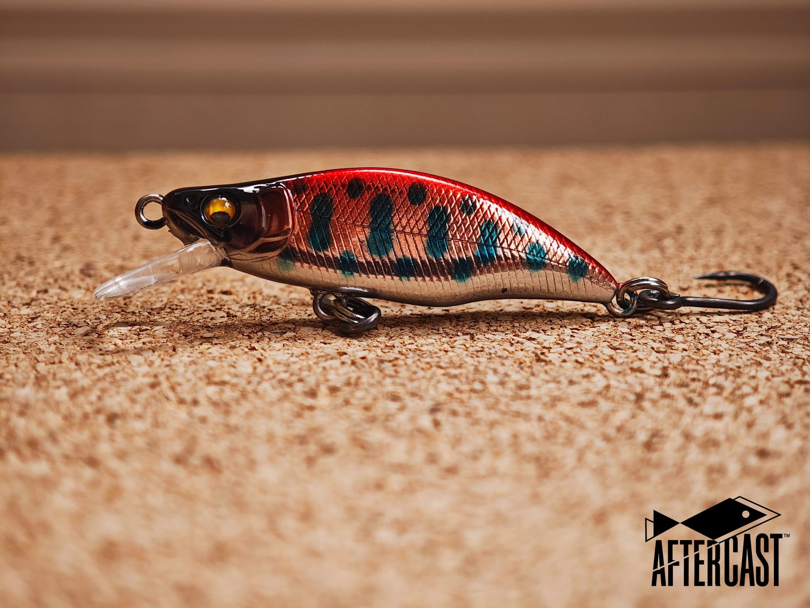
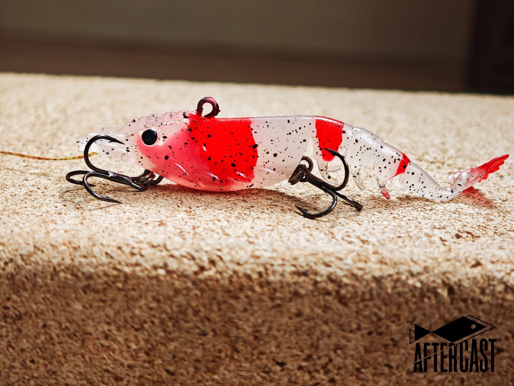
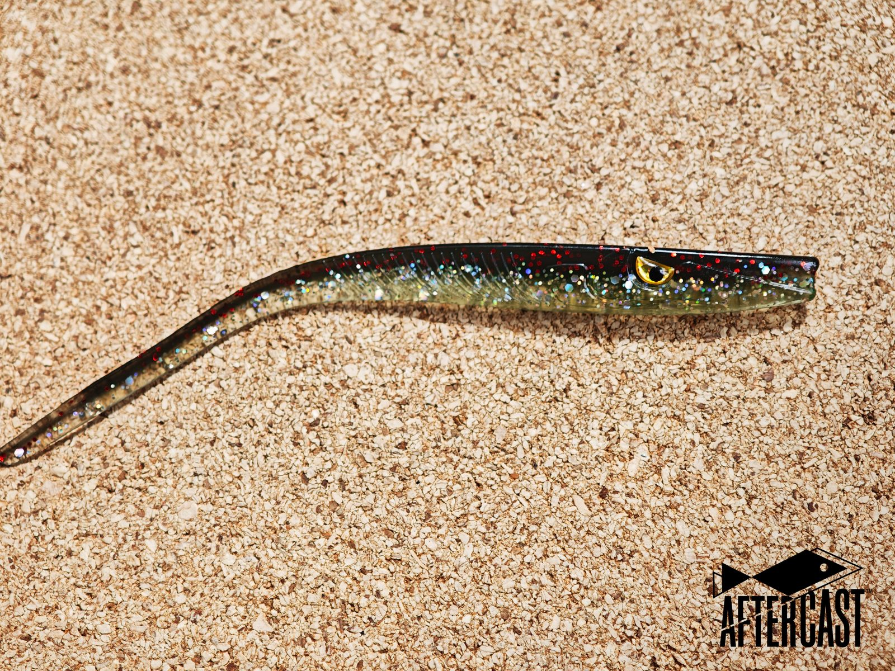
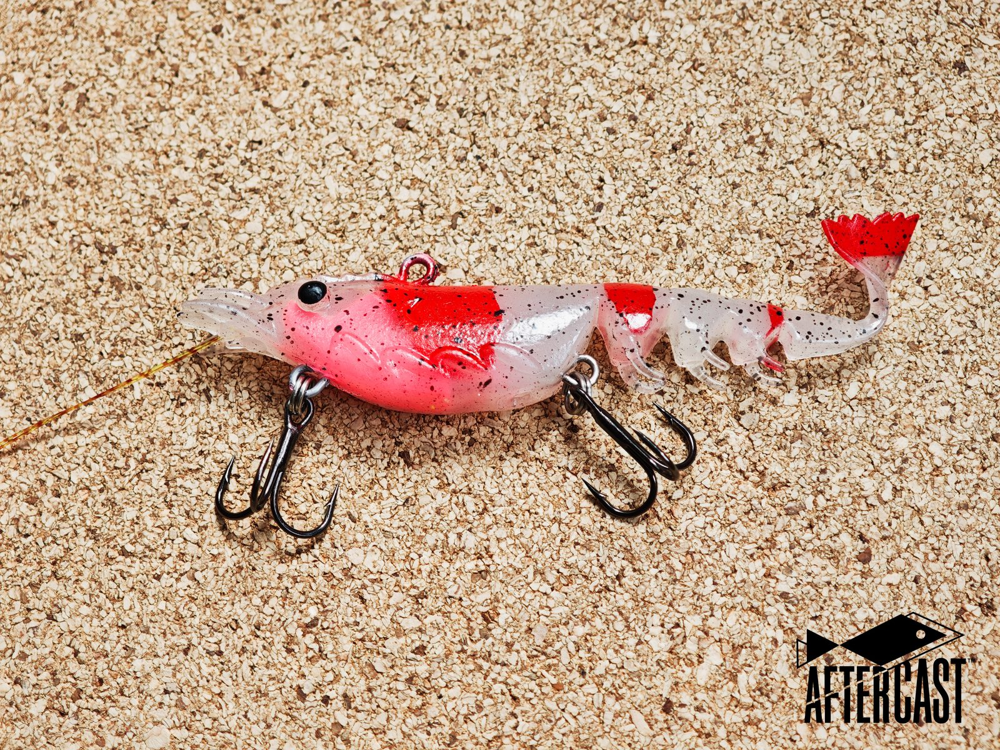

Creator brands · shops · guides
Private-label bass, inshore, and pike baits — existing molds, your colors and pack, quoted to your door.
Tell us the price you need to land at and we source to it. We coordinate lure, pack, and freight across the houses that actually run that bait — not one factory for every shape. Most first orders use an existing mold, and a run can start at 300 pieces across two or three colors.
Send a photo or mail a baitWatch
Field cast so you can see flight and retrieve, then a bait fished.
On the cast
Flight, splash, retrieve.
On the water
Cast, retrieve, hookset. No voiceover.

Your colors on this mold
Renders, not a color chart. Send a photo, a paint code, or a Pantone and we match it on the mold you pick.

{kind=link}

{kind=link}



{kind=link}


{kind=link}

Click a photo to open the original.
How it works
- Talk Photo or bait. No deposit.
- Sample A few baits, paid, mailed to you.
- Order From 300 pieces. 50% to start.
- To your door DAP quote. Duty separate.
Talk
Send a photo or mail one bait. We agree on mold, colors, hooks, and pack. No deposit for that.
Sample
This is a signed sample — colors, hooks, and pack — not hundreds of retail packs. The sample is paid: you cover the sample and the courier. It ships to your address, so you can hold it, rig it, and fish it before you commit to a run. If it is wrong in your hand or wrong in the tank, you do not go to production.
Order
A first run starts at 300 pieces, and you can split it across two or three colors — this is not container work. 50% starts that order; the rest is due before the cartons leave. Later reorders follow the same signed sample.
To your door
Production runs to the signed sample, and we check it before the cartons leave. Freight is in the DAP quote. Duty stays a separate line — we are not your importer of record.
The 50% is the deposit on the production order, not on the sample.
Do I need a new mold?
No. First orders should use an existing mold. You still choose colors, hook brand, and the pack. A new cavity comes later, if that shape sells.
Can you hit my price?
Tell us the landed cost you need and we will tell you honestly whether it is reachable, and on which shape. We quote across several houses rather than one, so the price you give us is what we source against. If your number does not work on the shape you want, we say so before you pay for a sample — and usually we can tell you which shape does work at that number.
How small can the first order be?
A first production run starts at 300 pieces, and you can split that across two or three colors. The sample before it is a few baits, paid and mailed to you. Printed bags and new molds carry their own minimums. We tell you which number applies before you pay for anything.
Can I see it swim first?
Yes. We shoot tank clips — action, sink, pause — on the sample you would actually produce. If the clip is wrong, you do not pay for a production run.
What baits do you actually do?
Bass, inshore, and European predator: minnows, walkers, poppers, jerkbaits, small cranks, blades and vibes, paddle tails, stick baits, shrimp-style soft plastics, and pike and perch baits from roughly 10 to 23 cm. Not frogs, giant musky, wood, or ice spoons on the first project.
Quality, who it’s for, how to start
What does quality mean here?
A locked sample plus a short list: hard baits (weight, balance, hardware, paint, pause); soft baits (shape, softness, oil, seal); packs (count, barcode, warning, carton mark). Hooks are BKK, Mustad, Owner, or Gamakatsu — whichever brand is on the signed sample. We do not swap in an unnamed hook on the reorder.
Who is this for?
Creators, shops, and guides who already have a name — especially if a bait stocked out and the next run has to match, if you are pouring, printing, or painting by hand and have run out of hours, or if you run a shop, have spent years selling other people’s brands, and want one bait with your own name on the shelf. Not a sourcing agent, not Amazon white-label volume, not “cheapest China” RFQs, not brands that must be Made in USA.
How do I start?
Email a photo, or mail one bait. Photos get you a route. A mailed bait gets you a number you can trust. Say the shape, a target quantity, the landed cost you are aiming at, and whether you already have pack artwork. Write first if you want a mailing address.
Is the price the price at my door?
The quote is DAP to your address unless we write something else on the PI. Bond, importer of record, and unpaid duty stay with you unless they are on the PI.
I’ve never imported anything. What do I have to do?
You are the importer, not us. At this size that involves less than most people expect. In the United States a shipment valued under $2,500 generally clears as an informal entry: no customs bond, no broker required by law, and the courier files it for you. You need an importer number — for a company that is your EIN. In the EU and UK it is an EORI number, and in Australia your ABN.
We supply the commercial invoice, packing list, HS code, and a certificate of origin where one applies, because most clearance trouble starts with the seller’s paperwork rather than the buyer’s. Duty stays a separate line and we do not guess the rate — your courier or broker confirms it. Thresholds and rates change, so treat this as the shape of it rather than as advice.
China time. Replies usually land in U.S. business hours.